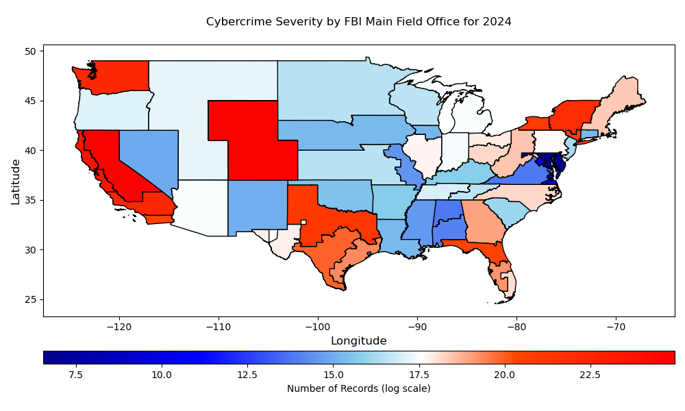

Cybercrime Severity in 2024 by FBI Main Field Office
We analyze cybercrime severity for the FBI's 53 main field offices by the located in the contiguous U.S. the FBI's ongoing cybercrime mitigation strategy is to assign more cybercrime staff in field offices to be closer to where victims of cyber crimes actually are. That is why, in April 2024, FBI's Model Cyber Squad initiative can only so far dedicate 12 FBI personnel stationed at each main field office for responding to cybercrime incidents.
For this study, we aggregate the number of records compromised by FBI main field offices using the following methodology. First, we apply our regression and forecasting techniques to model the significant covariates associated with cybercrime activities, resulting in estimates of the number of records compromised for cybercrime severity for each state. Next, we identify which counties fall within the territories of each of the 53 main field offices (we refer the reader to the list detailing which counties fall within each main field office territory.We then calculate the percentage of each state covered by each main field office. Finally, we multiply these percentages by the estimated number of compromised records for each state, providing estimates of the number of records compromised for each FBI main field office based on its territorial coverage within each state.